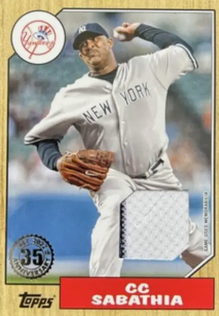

CC Sabathia "CC"
Career Highlights & Facts
(Facts are AI-generated and may require verification)
- Reached the 3,000 strikeout milestone during a 19-season career.
- Recorded 251 career victories as a starting pitcher.
- Maintained a career 3.74 ERA across 561 appearances.
Would you like to find out more about CC Sabathia?
This article is assigned to
Joseph Wancho
Full Name
Carsten Charles Sabathia
Born
July 21, 1980 at Vallejo, CA (USA)
Stats
Baseball Reference
Retrosheet
Carsten Charles Sabathia Jr. is an American former professional baseball pitcher who played 19 seasons in Major League Baseball (MLB) for the Cleveland Indians, Milwaukee Brewers, and New York Yankees. Sabathia batted and threw left-handed.
Career Totals
| WAR | W | L | ERA | G | GS | SV | IP | SO | WHIP |
|---|---|---|---|---|---|---|---|---|---|
| 62.3 | 251 | 161 | 3.74 | 561 | 560 | 0 | 3577.1 | 3093 | 1.259 |
Statistics via Baseball-Reference.com
The Original Clue